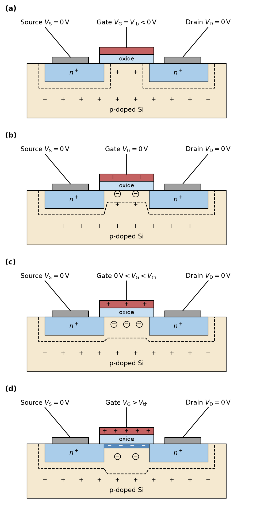
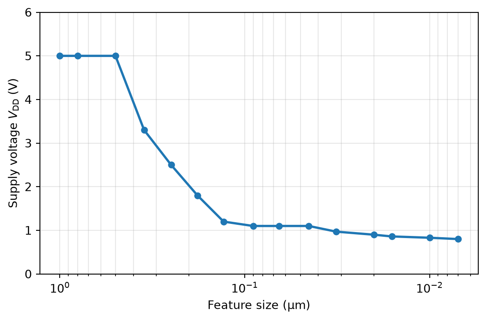
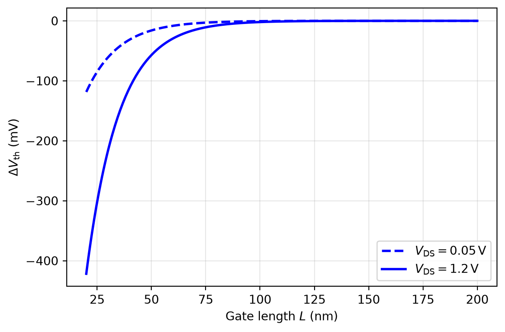
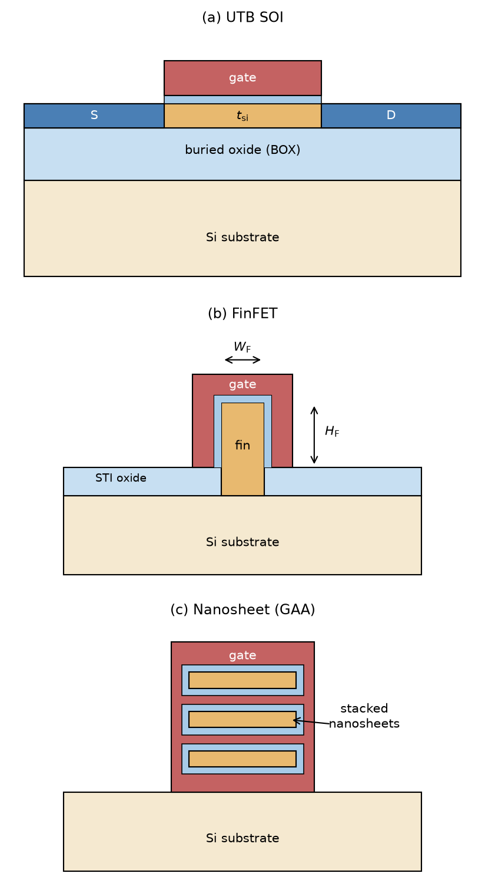
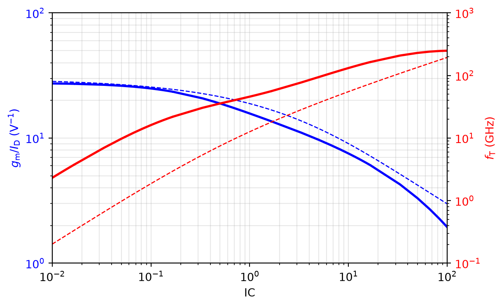

In the doping notation, \(+\) indicates a higher doping concentration than the surrounding material, while \(++\) indicates an even higher doping concentration. For example, \(n^+\)-doped regions have a higher electron concentration than the \(n\)-type substrate, and \(n^{++}\)-doped gates have an even higher electron concentration than the \(n^+\)-doped source/drain regions.
MOSFET Operation in a Nutshell

Figure 4: Cross section of an NMOS transistor for increasing gate voltage (drain and source grounded): (a) flatband condition, (b) gate at 0 V, (c) gate below the threshold voltage, and (d) inversion.
MOSFET Operation in a Nutshell
Flatband (a): When the gate is at a specific negative voltage (the flatband voltage \(V_\mathrm{fb}\)), and all other terminals are at \(0\,\text{V}\), a depletion zone forms only around the drain and source junctions. No current can flow, since drain and source are \(n^+\)-doped while the substrate is \(p\)-type, so the two junctions form back-to-back diodes.
MOSFET Operation in a Nutshell
Zero gate voltage (b): When the gate voltage is increased to \(0\,\text{V}\), a depletion zone also forms below the gate. The \(p\)-type acceptor ions in this region have captured an electron and are thus immobile, negatively charged sites (illustrated by the circled minus symbols)—still, no current can flow.
MOSFET Operation in a Nutshell
Below threshold (c): When the gate voltage increases further (but stays below the threshold voltage), the depletion zone below the gate deepens, reaching a maximum depletion width \(W_\mathrm{dep}\) when \(V_\mathrm{GS}= V_\mathrm{th}\). There is still no conduction between drain and source, because there are no (or at least very few) free electrons in the channel region.
MOSFET Operation in a Nutshell
Inversion (d): When the gate voltage rises above the threshold voltage \(V_\mathrm{th}\), inversion occurs: a thin layer of free electrons forms directly below the gate oxide, creating a conducting channel of electrons between drain and source. The source of the electrons in the inversion layer is the \(n^+\)-doped source region, which is connected to ground.
MOSFET Operation in a Nutshell
The electrons are pulled from the source into the channel by the positive gate voltage, and they can now flow to the drain if a drain voltage is applied.
MOSFET Operation in a Nutshell
Figure 5: Cross section of an NMOS transistor in inversion for increasing drain voltage: (a) triode region, where the inversion layer extends from source to drain, and (b) saturation, where the channel is pinched off at the drain side.
MOSFET Operation in a Nutshell
Triode (a): If a small voltage is applied between drain and source, a current flows, and the depletion zone around the drain widens. The drain current is a function of both \(V_\mathrm{GS}\) and \(V_\mathrm{DS}\); the device operates in the triode region. The MOSFET operates like a voltage-controlled resistor in this region.
MOSFET Operation in a Nutshell
Saturation (b): If the drain-source voltage is increased beyond \(V_\mathrm{DS}> V_\mathrm{GS}- V_\mathrm{th}\), the channel is pinched off at the drain side, and the drain current is (to first order) no longer a function of \(V_\mathrm{DS}\), only of \(V_\mathrm{GS}\)—the device is now in saturation. The MOSFET operates like a voltage-controlled current source in this region.
2.1.1 An Exemplary 130 nm Process Technology
Table 1: Typical parameters of the IHP SG13 130 nm CMOS technology
Parameter
Symbol
Typical value
Nominal supply voltage
\(V_\mathrm{DD}\)
1.2 V (digital) / 1.5 V (analog)
Minimum gate length
\(L_\mathrm{min}\)
130 nm
Oxide thickness
\(t_\mathrm{ox}\)
2 nm
Threshold voltage NMOS | PMOS
\(V_\mathrm{th,n}\) | \(V_\mathrm{th,p}\)
0.5 V | −0.47 V
Maximum voltage
\(|V_\mathrm{GS,max}|\), \(|V_\mathrm{DS,max}|\)
2 V
Gate capacitance
\(C'_\mathrm{ox}\)
17.3 fF/µm²
Process constant \(K_\mathrm{n}\) | \(K_\mathrm{p}\)
Figure 6: Simplified energy-band diagram of the MOS structure (\(n^{++}\)-poly gate, oxide, \(p\)-substrate): (a) at the flatband condition, where the bands in the silicon are flat, and (b) at the threshold condition, where the bands at the surface are bent down by \(2\Phi_\mathrm{B}\) and inversion sets in (band bending shown qualitatively).
The MOS Capacitor and the Threshold Voltage
Note 1: Example Calculation of the Threshold Voltage
Let us assume a substrate doping level of \(N_\mathrm{a}= 3 \times 10^{18}\,\text{cm}^{-3}\). The Fermi potential can be calculated with Equation 8 (using the intrinsic carrier concentration of silicon \(n_\mathrm{i} = 1.0 \times 10^{10}\,\text{cm}^{-3}\) at room temperature \(T = 300\,\text{K}\)):
We further use \(C'_\mathrm{ox}= \varepsilon_\mathrm{ox}/ t_\mathrm{ox}= 17.3\,\text{fF}/\mu\text{m}^2\) for a \(t_\mathrm{ox}= 2\,\text{nm}\) gate oxide. The flatband voltage for an \(n^+\)-polysilicon gate on the \(p\)-substrate with doping \(N_\mathrm{a}\) is (with the silicon band-gap voltage \(\Phi_\mathrm{bg} = 1.12\,\text{V}\))
Using these values, we can also calculate the depletion width \(W_\mathrm{dep}\) in inversion, and the corresponding \(C'_\mathrm{dep}\) (compare \(W_\mathrm{dep}\) to \(t_\mathrm{ox}\), and \(C'_\mathrm{dep}\) to \(C'_\mathrm{ox}\)):
Figure 7: Depletion width \(W_\mathrm{dep}\) (left) and surface potential \(\Phi_\mathrm{S}\) (right) as a function of the gate potential \(V_\mathrm{G}\), calculated with the depletion approximation for \(N_\mathrm{a} = 3 \times 10^{18}\,\mathrm{cm}^{-3}\), \(t_\mathrm{ox} = 2\,\)nm, and \(\Phi_\mathrm{fb} = -1.05\,\)V.
2.2.2 Derivation of the I/V Characteristic
\[
I_\mathrm{D}= W Q'_\mathrm{inv} v = W Q'_\mathrm{inv} \mu_\mathrm{n}E = W Q'_\mathrm{inv} \mu_\mathrm{n}\frac{V_\mathrm{DS}}{L}
= \mu_\mathrm{n}C'_\mathrm{ox}\frac{W}{L} (V_\mathrm{GS}- V_\mathrm{th}) V_\mathrm{DS}
\tag{9}\]
\[
I_\mathrm{D}= W Q'_\mathrm{inv}(x) v = W C'_\mathrm{ox}( V_\mathrm{GS}- V_\mathrm{cs} - V_\mathrm{th}) \mu_\mathrm{n}\frac{dV_\mathrm{cs}}{dx}
\]
Figure 8: NMOS output characteristic in the triode region according to the square-law model (\(\mu_\mathrm{n} C'_\mathrm{ox} = 280\,\mathrm{\mu A/V^2}\), \(W/L = 10\), \(V_\mathrm{th} = 0.5\,\)V).
Note 2: Example Calculation of the Body Effect (NMOS)
Starting with the previously used values (\(N_\mathrm{a}= 3 \times 10^{18}\,\text{cm}^{-3}\), \(C'_\mathrm{ox}= 17.3\,\text{fF}/\mu\text{m}^2\), \(\Phi_\mathrm{B}= 0.50\,\text{V}\)), we get
Let us consider the originally calculated \(V_\mathrm{th0} = 0.53\,\text{V}\) and assume the bulk is tied to \(V_\mathrm{SS}= V_\mathrm{B} = 0\,\text{V}\) while the source sits at \(V_\mathrm{S} = 0.5\,\text{V}\) (so \(V_\mathrm{SB}= 0.5\,\text{V}\)). Using Equation 15:
In this case, the threshold voltage has been increased by 130 mV. Conversely, by tying the bulk to a higher potential than the source, the threshold voltage can also be decreased, but beware of the risk of forward-biasing the source-bulk pn-junction (see Figure 10)!
The oxide capacitance between the gate and the channel, \(C_\mathrm{gg}= C'_\mathrm{ox}W L\).
The gate-drain and gate-source overlap capacitances \(C_\mathrm{ov} = C'_\mathrm{ov} W\).
The junction capacitance between drain/source and substrate, \(C_\mathrm{j} = C_\mathrm{j0} / (1 + V_\mathrm{DB | SB} / \Phi_\mathrm{B})^m\) with \(m \approx 0.3 \ldots 0.4\). \(C_\mathrm{j0}\) is defined by the area and perimeter of the drain/source regions.
The depletion capacitance between the channel (the inversion layer) and the substrate, \(C_\mathrm{dep} = C'_\mathrm{dep}W L\).
MOSFET AC Operation
Table 2: Dominant gate capacitances of the MOSFET in the triode and saturation regions
Figure 13: Complete small-signal model of the MOSFET in saturation, including the gate resistance, the capacitances to all terminals, the transconductance \(g_\mathrm{m}\), the back-gate transconductance \(g_\mathrm{mb}\), and the output conductance \(g_\mathrm{ds}\).
Figure 14: Simplified small-signal models of the MOSFET in saturation for hand calculations: \(\pi\)-model (left), preferred when the input is at the gate, and \(\tau\)-model (right), preferred when the input is at the source.
2.6 MOSFET Scaling
MOSFET Scaling
Figure 15: CMOS technology scaling trend: minimum feature size (node name) versus year of first volume production, with key technology innovations annotated (data compiled from public sources, e.g., wikichip.org).
2.6.1 Scaling Theory
Reduce all lateral and vertical dimensions by \(\alpha\) (\(\alpha = \sqrt{2}\) for classical scaling; the area of a MOSFET thus shrinks by \(\alpha^2 = 2\)).
Reduce the threshold voltage \(V_\mathrm{th}\) and the supply voltage \(V_\mathrm{DD}\) by \(\alpha\).
The threshold voltage \(V_\mathrm{th}\): a lower \(V_\mathrm{th}\) increases the overdrive when the MOSFET is turned on and thus reduces the gate delay, but it exponentially increases the leakage current.
The nonideality factor \(n\) (ideally, \(n = 1\)).
2.7.2 Subthreshold Slope
\[
S = \left[ \frac{\partial (\log_{10} I_\mathrm{D})}{\partial V_\mathrm{GS}} \right]^{-1} = \frac{n V_\mathrm{T}}{\log_{10}(e)} = 2.3 \, n V_\mathrm{T}
\tag{38}\]
Subthreshold Slope
The lower bound is \(S = 2.3 V_\mathrm{T}= 59.4\,\text{mV/dec}\) at \(300\,\text{K}\).
Using \(n = 1.29\) from the previous example, \(S = 76.6\,\text{mV/dec}\), which is a good value; \(S\) for bulk CMOS is in the range of 80 to 120 mV/dec.
Subthreshold Slope

Figure 16: Nominal core supply voltage versus CMOS technology node.
2.7.3 Gate Oxide Leakage
The breakdown voltage of the oxide is reduced, mandating a low \(V_\mathrm{DD}\).
The gate leakage current increases dramatically due to quantum-mechanical tunneling.
The oxide thickness \(t_\mathrm{ox}\), which has already been discussed in the context of gate leakage.
The depletion width \(W_\mathrm{dep}\).
The drain junction depth \(X_\mathrm{j}\).
Drain-Induced Barrier Lowering (DIBL)

Figure 17: Threshold-voltage shift \(\Delta V_\mathrm{th}\) due to DIBL as a function of gate length, calculated with the model of Equation 39 for a characteristic length \(l_\mathrm{d} = 15\,\)nm.
2.7.5 Solving DIBL: The Ultra-Thin-Body MOSFET
Since much less body doping \(N_\mathrm{a}\) is needed, the carrier mobility is higher.
There is no (or only a small) body effect, since the body is floating and fully depleted.
The drain/source-to-bulk capacitance is largely reduced and almost constant.
2.7.6 Solving DIBL: FinFET and Nanosheet
The device width is quantized, with \(W = W_\mathrm{F} + 2 H_\mathrm{F}\) per fin (\(W_\mathrm{F}\) is the width and \(H_\mathrm{F}\) the height of the fin), so the circuit design style must be adapted (the design parameter is the number of fins \(N_\mathrm{F}\) instead of \(W\)).
Drain and source are contacted at the ends of the fin, so the series resistances \(R_\mathrm{S}\) and \(R_\mathrm{D}\) are higher, degrading the transconductance due to series feedback: \(g_\mathrm{m,eff} = g_\mathrm{m}/ (1 + g_\mathrm{m}R_\mathrm{S})\).
Since the subthreshold slope is improved (smaller), the leakage current is lower, which allows lowering \(V_\mathrm{th}\) and \(V_\mathrm{DD}\).
Solving DIBL: FinFET and Nanosheet
DIBL and thus \(g_\mathrm{ds}\) are lower, so the MOSFET self-gain \(g_\mathrm{m}/ g_\mathrm{ds}\) is high.
There is practically no body effect, and due to the low channel doping the mobility is high, leading to improved \(g_\mathrm{m}/I_\mathrm{D}\) and \(\mu_\mathrm{n}\approx \mu_\mathrm{p}\).
The silicon fins are isolated and surrounded by SiO2, so self-heating of the fin can be an issue.
The 3D structure increases the coupling capacitance \(C_\mathrm{ov}\).
Solving DIBL: FinFET and Nanosheet
A drawback is that SRAM and digital standard cells often use minimum-size transistors, and for yield reasons a minimum-sized FinFET requires two fins—a strong constraint when, e.g., the PMOS needs to be sized differently from the NMOS (the next step up is three fins, a large quantization step).
Solving DIBL: FinFET and Nanosheet

Figure 18: Advanced MOSFET structures with improved electrostatic gate control: (a) ultra-thin-body (UTB) SOI MOSFET shown along the channel, (b) FinFET shown perpendicular to the channel (the gate wraps around the fin on three sides), and (c) nanosheet (gate-all-around) MOSFET, where stacked channels are completely surrounded by the gate.
2.8 Simulated Characteristics in IHP SG13
Simulated Characteristics in IHP SG13
Figure 19: Simulated output characteristic of an NMOS in IHP SG13 (\(W = 1.3\,\mathrm{\mu m}\), \(L = 0.13\,\mathrm{\mu m}\), \(V_\mathrm{SB} = 0\)) for different gate-source voltages.
Simulated Characteristics in IHP SG13
Figure 20: Simulated transfer characteristic of an NMOS in IHP SG13 (\(W = 1.3\,\mathrm{\mu m}\), \(L = 0.13\,\mathrm{\mu m}\), \(V_\mathrm{SB} = 0\)) on a logarithmic current axis.
Simulated Characteristics in IHP SG13
Figure 21: Simulated output characteristic of a PMOS in IHP SG13 (\(W = 1.3\,\mathrm{\mu m}\), \(L = 0.13\,\mathrm{\mu m}\), \(V_\mathrm{SB} = 0\)) for different gate-source voltages.
Simulated Characteristics in IHP SG13
Figure 22: Simulated transfer characteristic of a PMOS in IHP SG13 (\(W = 1.3\,\mathrm{\mu m}\), \(L = 0.13\,\mathrm{\mu m}\), \(V_\mathrm{SB} = 0\)) on a logarithmic current axis.
2.9 MOSFET Sizing
2.9.1 The \(g_\mathrm{m}/I_\mathrm{D}\) Method
2.9.2 The Inversion-Coefficient Method
\[
I_\mathrm{S} = \mu C'_\mathrm{ox}\frac{W}{L} \cdot 2 n V_\mathrm{T}^2.
\tag{40}\]
Figure 23: Transconductance efficiency \(g_\mathrm{m}/I_\mathrm{D}\) (blue, left axis) and transit frequency \(f_\mathrm{T}\) (red, right axis) versus the inversion coefficient IC, calculated with the analytical model (\(n = 1.3\), \(L = 0.13\,\mathrm{\mu m}\), \(\mu = 280\,\mathrm{cm^2/(V\,s)}\)).
The Inversion-Coefficient Method

Figure 24: Transconductance efficiency \(g_\mathrm{m}/I_\mathrm{D}\) (blue, left axis) and transit frequency \(f_\mathrm{T} = g_\mathrm{m}/(2 \pi C_\mathrm{gg})\) (red, right axis) versus inversion coefficient, extracted from a simulation of an NMOS (\(W/L = 1.3\,\mathrm{\mu m}/0.13\,\mathrm{\mu m}\)) in IHP SG13, using a specific current of \(I_\mathrm{S} = 6\,\mathrm{\mu A}\) extracted from the simulation data.
2.9.3 Sizing Procedure
Depending on the trade-off between low power (high \(g_\mathrm{m}/I_\mathrm{D}\)) and high speed (high \(f_\mathrm{T}\)), select the \(\mathrm{IC}\) (often, \(\mathrm{IC}\approx 1\) is a reasonable compromise).
Choose either the bias current or the required \(g_\mathrm{m}\), and calculate the other one using Equation 43.
Using Equation 42, calculate \(I_\mathrm{S}\) from the known \(I_\mathrm{D}\).
Depending on the requirements for transistor speed (minimum \(L\)), matching (large \(W \cdot L\)), or small \(g_\mathrm{ds}\) (large \(L\)), choose the appropriate \(L\); use Equation 40 to calculate the corresponding \(W\).
Sizing Procedure
Finally, estimate \(f_\mathrm{T}\) using Equation 44. From \(f_\mathrm{T}\), the required bandwidth of the circuit can be estimated, and the sizing can be iterated if necessary.
2.10 Summary
Summary
Switch (for small \(V_\mathrm{DS}\) and large \(V_\mathrm{GS}\)).
Voltage-controlled resistor (since \(g_\mathrm{ds}= f(V_\mathrm{GS})\) in the triode region).
Voltage-controlled current source (since \(I_\mathrm{D}= f(V_\mathrm{GS})\) in the saturation region).
Diode (since the MOSFET is off for \(V_\mathrm{GS}< V_\mathrm{th}\) and on otherwise).
Variable capacitor (using the gate oxide or drain/source junction capacitance).
2.11 Appendix: Silicon Material Properties
Appendix: Silicon Material Properties
Table 5: Physical material properties of silicon
Physical parameter of Si
Symbol
Typical value
Lattice constant
0.54 nm
Density
\(5.0 \times 10^{22}\,\text{cm}^{-3}\)
Relative permittivity of Si
\(\varepsilon_\mathrm{r,si}\)
11.9
Relative permittivity of SiO2
\(\varepsilon_\mathrm{r,ox}\)
3.9
Band gap at 300 K
\(E_\mathrm{bg}\)
1.12 eV
Intrinsic carrier concentration at 300 K
\(n_\mathrm{i} = p_\mathrm{i}\)
\(1.0 \times 10^{10}\,\text{cm}^{-3}\)
Linear coefficient of thermal expansion
CTE
\(2.6 \times 10^{-6}\,\text{K}^{-1}\)
Melting point
1415 °C
Mobility of electrons at 300 K
\(\mu_\mathrm{n}\)
1500 cm²/(V s)
Mobility of holes at 300 K
\(\mu_\mathrm{p}\)
450 cm²/(V s)
Thermal conductivity
1.5 W/(cm K)
Breakdown field
\(E_\mathrm{crit}\)
\(3 \times 10^{5}\,\text{V/cm}\)
References
Dennard, Robert H., Fritz H. Gaensslen, Hwa-Nien Yu, V. Leo Rideout, Ernest Bassous, and Andre R. LeBlanc. 1974. “Design of Ion-Implanted MOSFET’s with Very Small Physical Dimensions.”IEEE Journal of Solid-State Circuits 9 (5): 256–68.
Goto, Ken-ichi et al. 2003. “High Performance 25 nm Gate CMOSFETs for 65 nm Node High Speed MPUs.”IEEE International Electron Devices Meeting (IEDM).
Hu, Chenming. 2010. Modern Semiconductor Devices for Integrated Circuits. Pearson.
Pretl, Harald, and Matthias Eberlein. 2021. “Fifty Nifty Variations of Two-Transistor Circuits: A Tribute to the Versatility of MOSFETs.”IEEE Solid-State Circuits Magazine 13 (3): 38–46. https://doi.org/10.1109/MSSC.2021.3088968.
Razavi, Behzad. 2014. Fundamentals of Microelectronics. 2nd ed. Wiley.
Sansen, Willy. 2015. “Minimum Power in Analog Amplifying Blocks: Presenting a Design Procedure.”IEEE Solid-State Circuits Magazine 7 (4): 83–89. https://doi.org/10.1109/MSSC.2015.2474237.
Sansen, Willy M. C. 2006. Analog Design Essentials. Springer.
Stillmaker, Aaron, and Bevan Baas. 2017. “Scaling Equations for the Accurate Prediction of CMOS Device Performance from 180 nm to 7 nm.”Integration, the VLSI Journal 58: 74–81. https://doi.org/10.1016/j.vlsi.2017.02.002.
Tsividis, Yannis, and Colin McAndrew. 2011. Operation and Modeling of the MOS Transistor. 3rd ed. Oxford University Press.